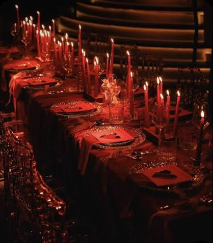
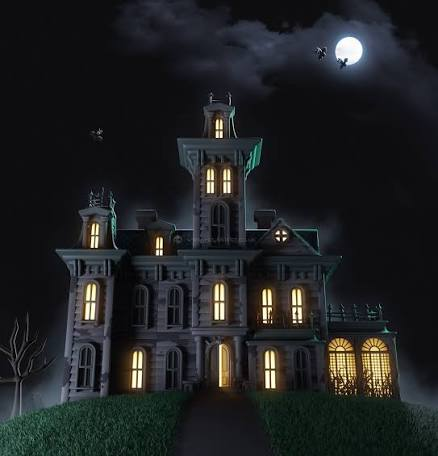
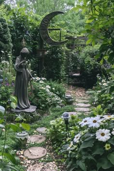

Stories, milestones, and gloomy good times from Cemetery Lane

Dinner by candlelight, as always.
Candlelit Dinners Bring Everyone Together
Every evening, the Addams family gathers in the dining room for a long, candlelit meal. Morticia sets the table with fresh black roses, and Gomez always has a toast ready. Wednesday and Pugsley compete to tell the most dramatic story of their day. It is the one time when the whole family, including Uncle Fester and Grandmama, is in the same room.

The family mansion on a quiet evening.
Mansion Hosts Biggest Family Reunion Yet
Relatives from all over arrived at the mansion this week for the annual family reunion. Cousin Itt came the farthest, and Lurch greeted every guest at the door. The house was full of music, dancing, and stories that the younger cousins had never heard before. By midnight, everyone agreed it was the best reunion in years.

Morticia's garden in full bloom.
Garden Project Is a Family Effort
This weekend, the family teamed up to plant new flowers in Morticia's garden. Pugsley dug the holes, Wednesday picked the plants, and Thing handled the delicate work. Gomez supervised with great enthusiasm and not much actual digging. The garden has never looked better, and everyone was proud of the result.